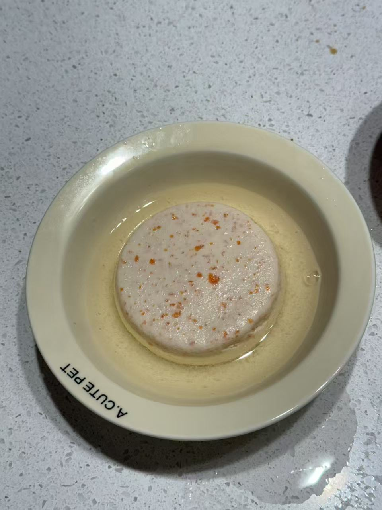

Hello! My name is Yuyang Du. I’m excited to share my personal website with you. I have many interests, but the ones that bring me the most joy are watching dramas and cooking for my beloved cat, Shu Tiao. There’s something incredibly satisfying about experimenting with different recipes, particularly those that might intrigue a cat’s curious palate. My cat Shu Tiao has a gentle yet mischievous personality, and she’s always eager to see what I’m whipping up in the kitchen. Although cats can’t really eat most of the things we humans enjoy, I love creating cat-safe treats that let Shu Tiao share in the excitement of mealtime.
Beyond cooking, I also enjoy immersing myself in various dramas—from thrilling mysteries to heartwarming romances. There’s a sense of escape and comfort that comes from losing oneself in a well-crafted story. Whether I’m laughing at a sitcom or shedding a tear over a tearjerker, these dramas offer a window into different worlds and perspectives. Sometimes, Shu Tiao even curls up next to me on the couch, purring contentedly as we relax together. Between my drama marathons and culinary experiments, life is both cozy and fun. I hope this website gives you a little glimpse into my life, my hobbies, and the joys that come with caring for a curious cat. Thank you for visiting, and I look forward to sharing more about my journey in the pages that follow.
